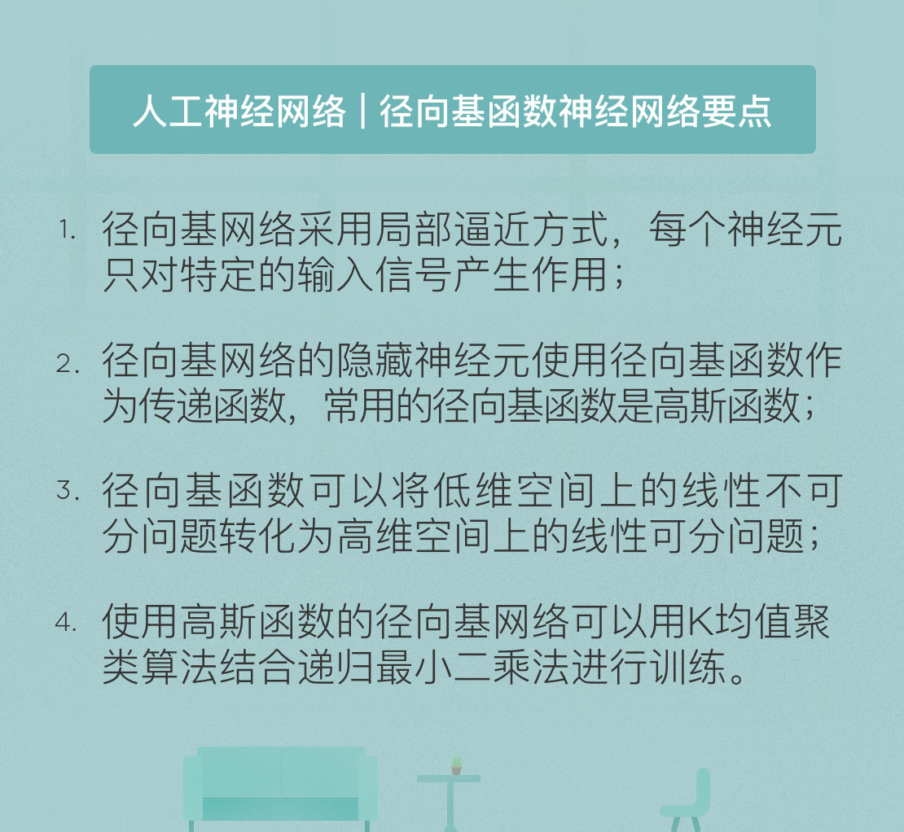

- 00 开篇词 人工智能：新时代的必修课.md
- 01 数学基础 九层之台，起于累土：线性代数.md
- 02 数学基础 月有阴晴圆缺，此事古难全：概率论.md
- 03 数学基础 窥一斑而知全豹：数理统计.md
- 04 数学基础 不畏浮云遮望眼：最优化方法.md
- 05 数学基础 万物皆数，信息亦然：信息论.md
- 06 数学基础 明日黄花迹难寻：形式逻辑.md
- 07 机器学习 数山有路，学海无涯：机器学习概论.md
- 08 机器学习 简约而不简单：线性回归.md
- 09 机器学习 大道至简：朴素贝叶斯方法.md
- 10 机器学习 衍化至繁：逻辑回归.md
- 11 机器学习 步步为营，有章可循：决策树.md
- 12 机器学习 穷则变，变则通：支持向量机.md
- 13 机器学习 三个臭皮匠，赛过诸葛亮：集成学习.md
- 14 机器学习 物以类聚，人以群分：聚类分析.md
- 15 机器学习 好钢用在刀刃上：降维学习.md
- 16 人工神经网络 道法自然，久藏玄冥：神经网络的生理学背景.md
- 17 人工神经网络 一个青年才俊的意外死亡：神经元与感知器.md
- 18 人工神经网络 左手信号，右手误差：多层感知器.md
- 19 人工神经网络 各人自扫门前雪：径向基函数神经网络.md
- 20 人工神经网络 看不见的手：自组织特征映射.md
- 21 人工神经网络 水无至清，人莫至察：模糊神经网络.md
- 22 深度学习 空山鸣响，静水流深：深度学习概述.md
- 23 深度学习 前方有路，未来可期：深度前馈网络.md
- 24 深度学习 小树不修不直溜：深度学习中的正则化.md
- 25 深度学习 玉不琢不成器：深度学习中的优化.md
- 26 深度学习 空竹里的秘密：自编码器.md
- 27 深度学习 困知勉行者勇：深度强化学习.md
- 28 深度学习框架下的神经网络 枯木逢春：深度信念网络.md
- 29 深度学习框架下的神经网络 见微知著：卷积神经网络.md
- 30 深度学习框架下的神经网络 昨日重现：循环神经网络.md
- 31 深度学习框架下的神经网络 左右互搏：生成式对抗网络.md
- 32 深度学习框架下的神经网络 三重门：长短期记忆网络.md
- 33 深度学习之外的人工智能 一图胜千言：概率图模型.md
- 34 深度学习之外的人工智能 乌合之众的逆袭：集群智能.md
- 35 深度学习之外的人工智能 授人以鱼不如授人以渔：迁移学习.md
- 36 深度学习之外的人工智能 滴水藏海：知识图谱.md
- 37 应用场景 你是我的眼：计算机视觉.md
- 38 应用场景 嘿, Siri：语音处理.md
- 39 应用场景 心有灵犀一点通：对话系统.md
- 40 应用场景 数字巴别塔：机器翻译.md
- 一键到达 人工神经网络复习课.md
- 一键到达 应用场景复习课.md
- 一键到达 数学基础复习课.md
- 一键到达 机器学习复习课.md
- 一键到达 深度学习之外的人工智能复习课.md
- 一键到达 深度学习复习课.md
- 一键到达 深度学习框架下的神经网络复习课.md
- 推荐阅读 我与人工智能的故事.md
- 新书 《裂变：秒懂人工智能的基础课》.md
- 直播回顾 机器学习必备的数学基础.md
- 第2季回归 这次我们来聊聊机器学习.md
- 结课 溯洄从之，道阻且长.md
- 课外谈 “人工智能基础课”之二三闲话.md
- （课外辅导）人工神经网络 拓展阅读参考书.md
- （课外辅导）数学基础 拓展阅读参考书.md
- （课外辅导）机器学习 拓展阅读参考书.md
- （课外辅导）深度学习 拓展阅读参考书.md
19 人工神经网络 各人自扫门前雪：径向基函数神经网络
多层感知器是一类全局逼近的神经网络，网络的每个权重对任何一个输出都会产生同等程度的影响。因而对于每次训练，网络都要调整全部权值，这就造成全局逼近网络的收敛速度较慢。显然，这是一种牵一发而动全身的全局作用方式。
与全局作用对应的是局部作用。在局部作用中，每个局部神经元只对特定区域的输入产生响应。如果输入在空间上是相近的，对这些输入的反应应该是相似的，那么被这些输入激活的神经元也应该是同一批神经元。进一步推广又可以得到，如果一个输入\(A\)在另外两个输入\(B_1\)和\(B_2\)的空间位置之间，那么响应输入\(B_1\)和\(B_2\)的神经元也应该在一定程度上被\(A\)激活。
神经元的局部作用原理有它的生理学依据。当你仰望夜空中的点点繁星时，茫茫暗夜中的星光激活的是视觉神经的特定部分。随着地球的自转，星光也会移动，虽然亮度没有变化，但不同位置的星光激活的就是视觉神经中的不同部分，因而产生响应的神经元也会发生变化。有些原本被激活的神经元会因为目标对象的移出而被抑制，有些原本被抑制的神经元则因为目标对象的移入而被激活。
在神经科学中，这个概念被称为“感受野（receptive field）”。一个感觉神经元的感受野指的是位于这一区域内的适当刺激能够引起该神经元反应的区域。人类神经的感受野的变化方式可以在人工神经网络中以权重系数的形式体现出来，而按照感受野的变化规律设置权重系数，得到的就是“径向基函数神经网络”（Radial Basis Function Network , RBFN）。
径向基网络通常包含三层：一个输入层、一个隐藏层和一个输出层。其中隐藏层是径向基网络的核心结构。每个隐藏神经元都选择径向基函数作为传递函数，对输入分量的组合加以处理。需要注意的是，输入节点和隐藏节点之间是直接相连的，权重系数为1。
径向基函数是只取决于与中心矢量的距离的函数，也就是不管不同的点是在东西还是南北，只要它们和中心点之间的距离相同，其函数值就是相同的。径向基函数的图形会根据确定的中心点呈现圆周对称的性质。如果将欧氏距离作为距离的度量，函数的形式就可以定义为平缓变化的高斯函数，其表达式就是
\[ \\rho (\\mathbf{x}, \\mathbf{w}_i, \\sigma) = \\exp (\\dfrac{- || \\mathbf{x} - \\mathbf{w}_i || ^ 2}{2\\sigma ^ 2}) \]
式中的每个中心向量\(\\mathbf{w}_i\)都是径向基网络中的权重系数。一般情况下，所有高斯函数会共享同一个带宽\(\\sigma\)，因而将不同隐藏单元区分开来的就是中心向量\(\\mathbf{w}_i\)。每个径向基函数的输出按照参数进行线性组合后，再被送到输出神经元加以处理。输出神经元通常是普通的MP神经元。
前面介绍的是径向基网络的生理学依据，下面让我们看看这套方法在数学上的意义。隐藏层的作用是实现从输入空间到非显式特征空间的非线性变换，由此，低维空间上的非线性可分数据就被映射到高维空间之中。在一定的条件下，转换后的数据变为线性可分的可能性很高，这一点已经在数学上得到证明。
看到这里，你是否有似曾相识的感觉呢？没错，这和支持向量机的思路是一样的！支持向量机中的核技巧能够把低维空间中的非线性问题映射成高维空间中的线性问题，将低维空间中曲面形式的决策边界转化为高维空间中的超平面，从而降低分类问题的难度。在支持向量机中常用的核函数就包括高斯核函数，回忆一下，它的形式是不是和径向基网络中的高斯函数形式一模一样呢？
将低维问题投射到高维空间是解决线性不可分问题的通用方法。但是在某些情况下，一个非线性映射就足以在低维空间中解决问题，而不需要升高隐藏空间的维数，提升算法的复杂度。高斯函数就是这类“杀鸡焉用宰牛刀”的实例。
还是以异或问题为例。在异或问题中，四个数据点(0, 0), (0, 1), (1, 0), (1, 1)是正方形的四个顶点，处于对角线方向上的两个点属于同一个模式。如果引入高斯函数\(\\Phi_i (x) = \\exp(- || \\mathbf{x} - \\mathbf{u}_i || ^ 2), i = 1, 2\)，其中\(\\mathbf{u}_1 = \[0, 0\], \\mathbf{u}_2 = \[1, 1\]\)，则原始的四个数据点就被变换为(0.1353, 1), (0.3678, 0.3678), (0.3678, 0.3678), (1, 0.1353)。经过高斯函数的变换后，(0, 1)和(1, 0)两个具有相同异或结果的点重合在一起，异或问题也变成了线性可分问题。但在之前的处理中，空间的维数并未增加，问题的转化只用到了非线性的高斯函数。
另一个理解径向基网络的角度是多变量插值。整体上看，径向基网络的作用是学习一个高维空间上的超曲面，根据训练数据进行训练的过程就是对超曲面进行拟合的过程。但由于数据中存在噪声，因而训练得到的结果还需要泛化处理，泛化的任务就是在数据点之间进行插值，使插值后的曲面仍然要经过所有数据点。在插值过程中，使用的插值函数就是不同类型的径向基函数。
训练数据中的每个样本都是新的高维空间中的一个点，插值要做的是把所有离散的点连成一片，形成一个曲面。那么插值操作具体是如何进行的呢？高斯形式的径向基函数将每个训练样本映射为一个连续的函数，函数的中心就是样本点的取值。在整个空间内对所有的高斯函数求和，得到的就是拟合出的曲面。
当新样本出现时，其在曲面上的映射值就等于所有高斯径向基函数在这个数据点上的函数值之和。感受野理论告诉我们，每个训练数据对曲面的影响都只限于其数据周边的一个小范围内，因而在新样本的插值结果中，贡献较大的是离它比较近的训练数据。如果某些训练数据距离新样本较远，就不会对新样本产生影响。
在实际应用中，对径向基网络的训练包括两个步骤。第一步的任务是初始化中心向量\(\\mathbf{w}_i\)的位置，中心向量的位置既可以随机分配，也可以通过K均值聚类这一无监督学习的方法完成。这个步骤对应的是隐藏层的训练。第二步的任务是用线性模型拟合初始化的隐藏层中的各个中心向量，拟合的损失函数设定为最小均方误差函数，使用递归最小二乘法（Recursive Least Square）使损失函数最小化。这个步骤对应的是对输出层的训练。
使用K均值算法训练隐藏层时，聚类的数目K决定了隐藏神经元的数目，通过这个参数设计者可以控制径向基网络的性能和计算复杂度。算法的参数确定后，就能够对训练数据进行无监督的分类，计算出的每个聚类的中心就是高斯函数的中心。出于简化设计的考虑，每个高斯函数的带宽都是相同的，并被统一设置为\(\\sigma = d_{\\max} / \\sqrt{2K}\)，其中\(d_{\\max}\)是不同中心之间的最大距离。这种带宽的配置符合K均值算法中的中心散布，保证了各个高斯函数既不会太宽也不会太窄。
隐藏层的训练完成后，就可以开始输出层的训练了。输出层的输入信号是每个隐藏神经元输出信号的线性组合，因而递归最小二乘法是训练权重向量的合适选择。权重向量和隐藏神经元输出之间的关系可以表示为
\[ \\mathbf{R}(n) \\mathbf{\\hat w}(n) = \\mathbf{r}(n) \]
式中的\(\\mathbf{R}\)表示K个隐藏神经元输出之间的相关矩阵，\(\\mathbf{\\hat w}\)表示待训练的未知权重向量，\(\\mathbf{r}\)表示期望响应和隐藏单元输出之间的\(K \\times 1\)维互相关向量，自变量n则代表了训练的轮次。递归最小二乘法的作用在于简化逆矩阵\(\\mathbf{R} ^ {-1}(n)\)的求解，其详细的推导过程在此就不介绍了。
在训练完成后还可以添加额外的一个步骤，利用反向传播算法对径向基网络的所有参数进行一次微调，以达到更好的训练效果。这是由于无论是K均值聚类还是递归最小二乘法，都是针对特定层次的优化，反向传播优化的对象则是作为整体的径向基网络，它可以在统计意义上保证了整个系统的最优性。
与感知器类型的神经网络相比，径向基网络代表的则是局部逼近的工作方式。神经元的输入离径向基函数中心越近，神经元的激活程度就越高。但两者都能够实现通用逼近（universal approximation），也就是对任意非线性函数的逼近。
今天我和你分享了径向基函数神经网络的基本原理，其要点如下：
- 径向基网络采用局部逼近方式，每个神经元只对特定的输入信号产生作用；
- 径向基网络的隐藏神经元使用径向基函数作为传递函数，常用的径向基函数是高斯函数；
- 径向基函数可以将低维空间上的线性不可分问题转化为高维空间上的线性可分问题；
- 使用高斯函数的径向基网络可以用K均值聚类算法结合递归最小二乘法进行训练。
径向基神经网络是核技巧在神经网络中的应用，那么你还能想到核技巧及其思想的哪些其他应用呢？
欢迎发表你的观点。

© 2019 - 2023 Liangliang Lee. Powered by gin and hexo-theme-book.